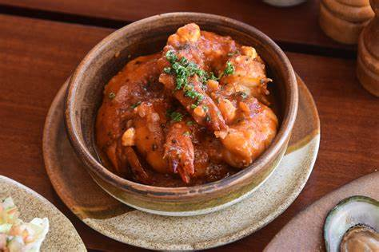

The Culture of Laguna
Celebrating the rich traditions and vibrant heritage of Laguna
Festivals and Celebrations
 Laguna is known for its lively festivals that highlight the town's cultural identity. The Sinulog ng Laguna, a vibrant celebration in honor of Santo Niño, features colorful parades, traditional dances, and music that bring the community together in joy and thanksgiving.
Laguna is known for its lively festivals that highlight the town's cultural identity. The Sinulog ng Laguna, a vibrant celebration in honor of Santo Niño, features colorful parades, traditional dances, and music that bring the community together in joy and thanksgiving.
Other festivities like the town fiesta showcase local delicacies, cultural performances, and age-old customs, offering a glimpse into the traditions that define Laguna.
Arts and Crafts
Laguna, including Laguna, is renowned for its skilled artisans who create beautiful handicrafts. From intricate woven mats to hand-carved wooden items, the town boasts a rich tradition of craftsmanship.
Visitors can explore local markets and workshops to appreciate and purchase these unique items, each a testament to the creativity and skill of the region's artisans.
Local Legends and Folklore
Stories passed down through generations form an integral part of Laguna's cultural heritage. Tales of mythical creatures, local heroes, and historical events are shared during gatherings, preserving the town's rich oral tradition.
These stories not only entertain but also provide valuable lessons and insights into the beliefs and values of Laguna's people.
Experience the Culture
Immerse yourself in the cultural richness of Laguna by participating in its festivals, exploring its arts and crafts, and listening to its stories. The town's traditions offer a deeper understanding of its history and a heartfelt connection to its people.